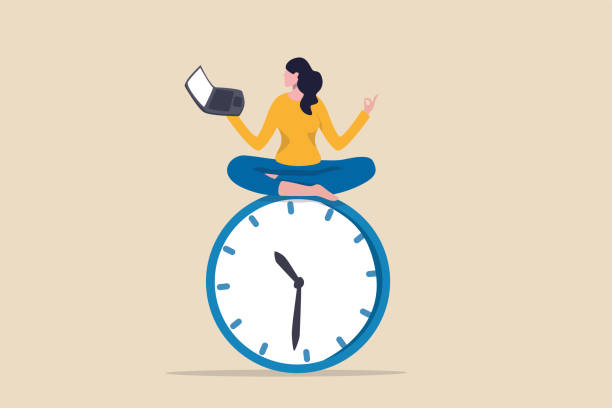
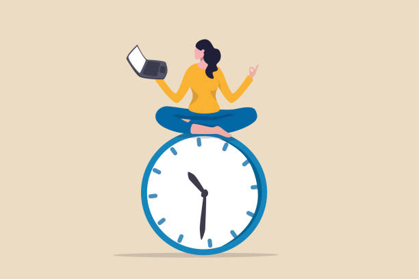

Kā efektīvāk plānot laiku
7 noderīgi ieteikumi, produktivitātes veicināšanai
Ja arī Tev ir sajūta, ka dienā ar 24 stundām ir par maz, iespējams, Tev noderētu iemācīties pareizi plānot laiku. No tā ir atkarīgs viss, gan Tava pašsajūta, gan sniegums. Lūk, kā vari sākt plānot savu laiku tagad:
 

- Sastādi savu dienas plānu
- Nosaki prioritātes veicamajiem uzdevumiem
- Uzliec termiņu savam plānam
- Izmanto kalendāru
- Novieto pulksteni redzamā vietā
- Koncentrējies uz veicamo uzdevumu
- Deleģē
digitālie laika plānošanas rīki
mērvienības
Avoti
interneta ieteikumi
swedbank ieteikumi